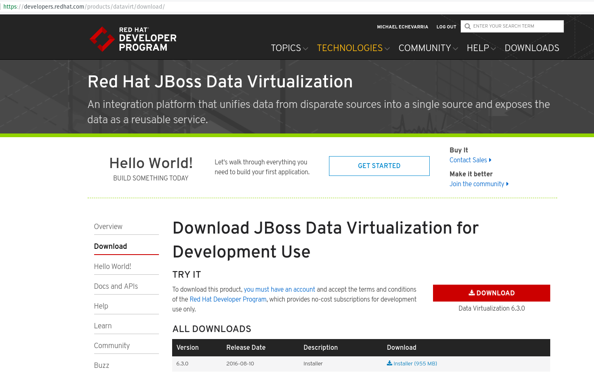
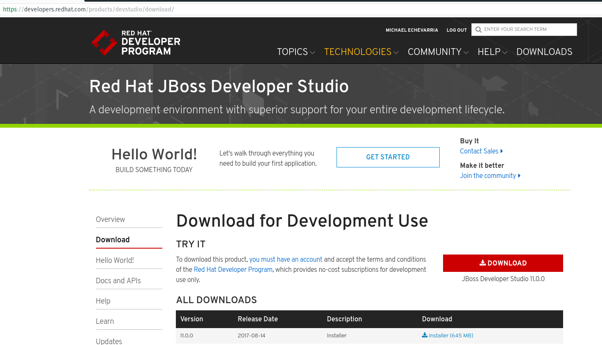
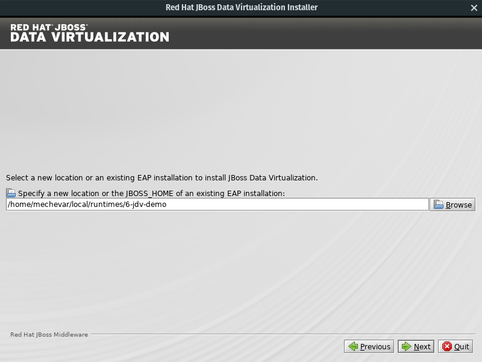
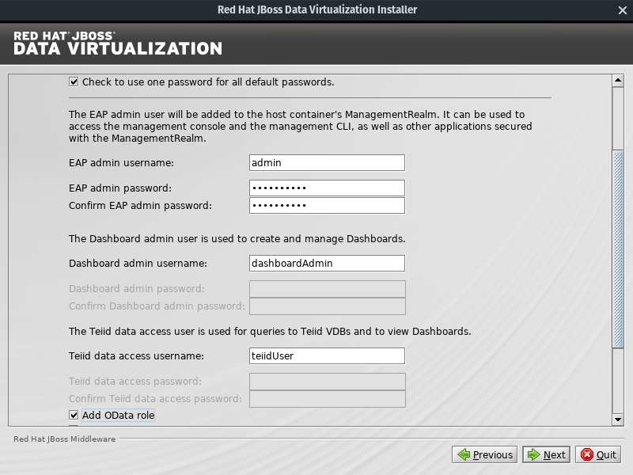
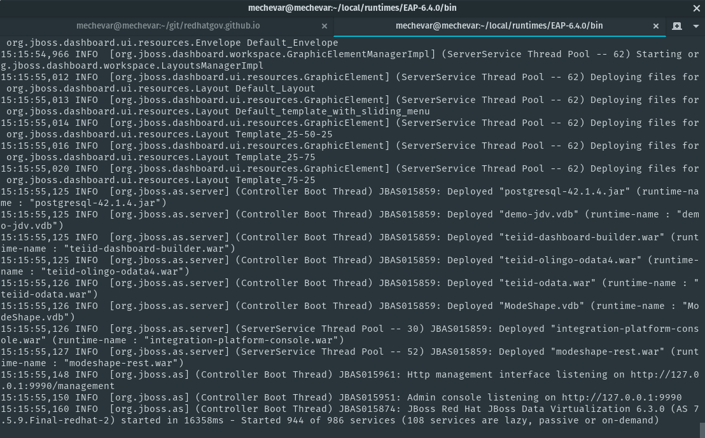
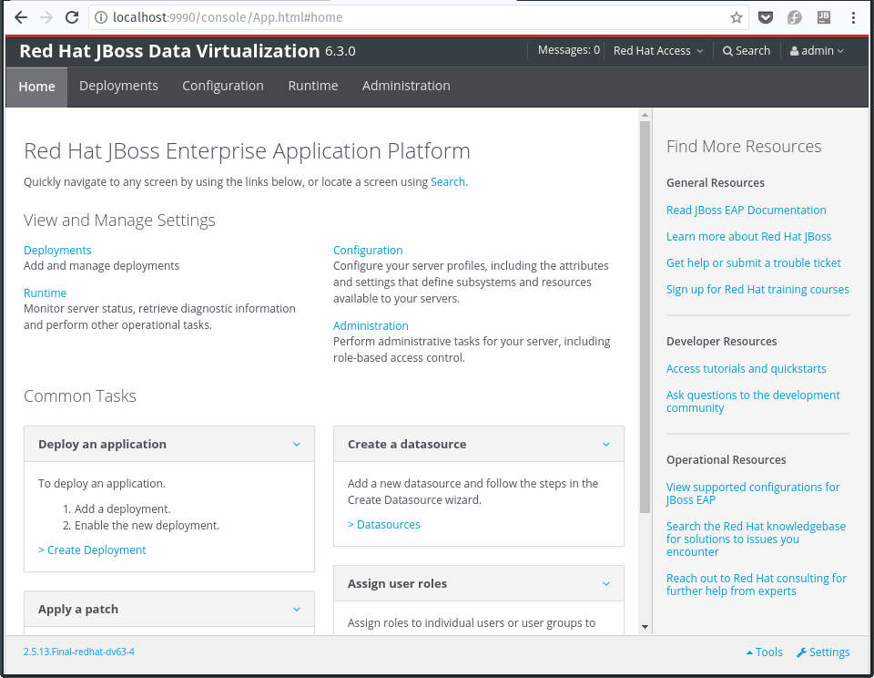
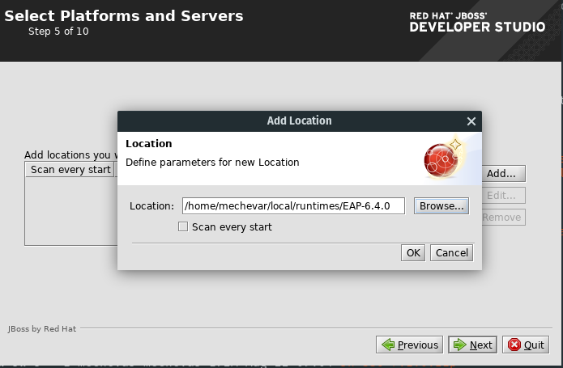
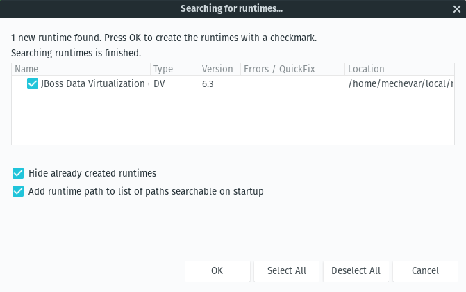
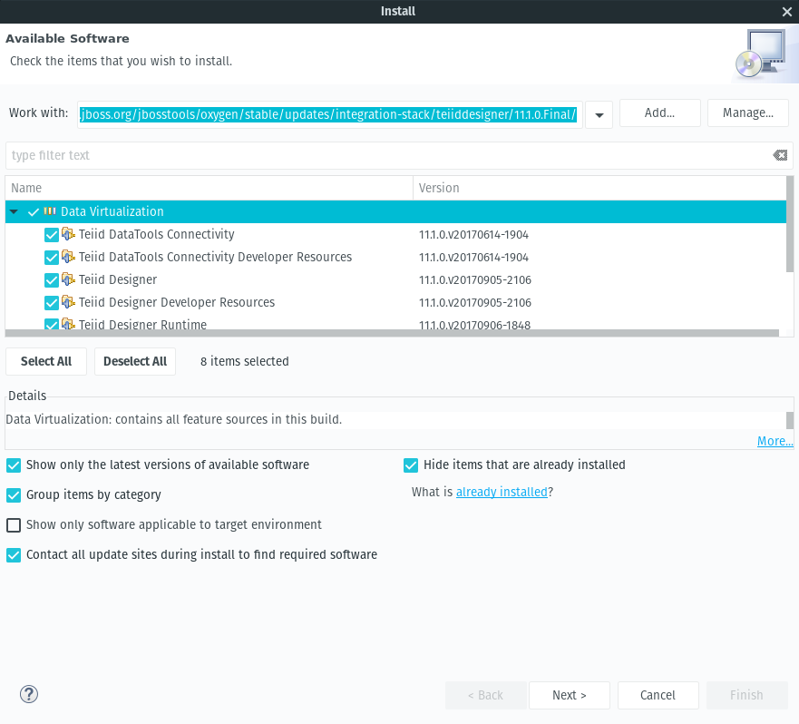
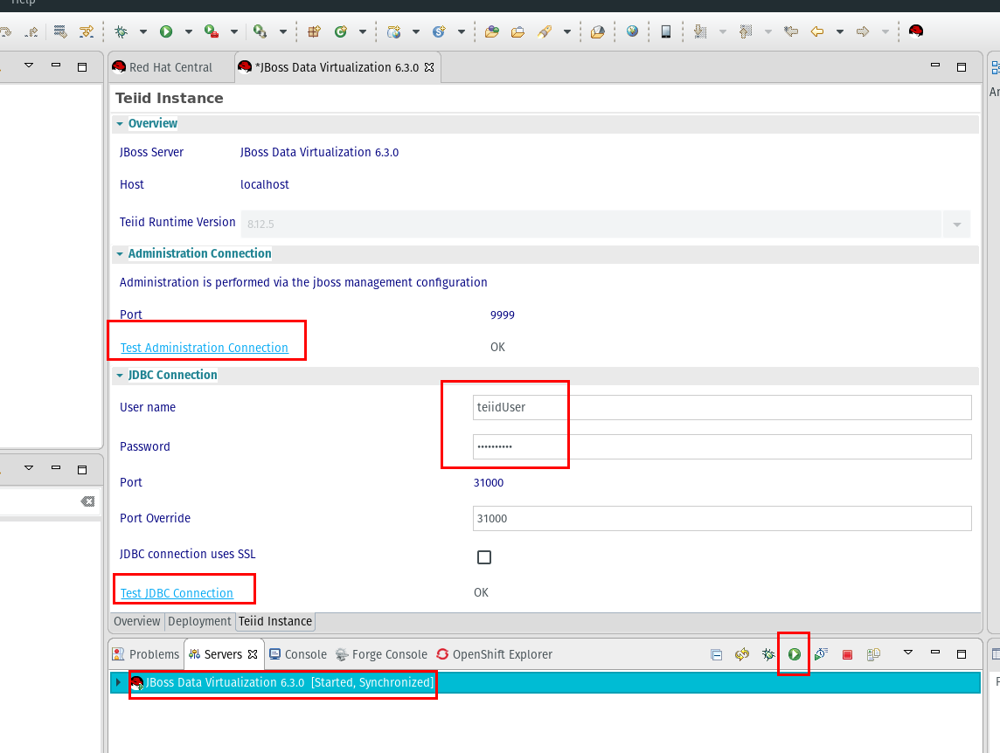

jboss-dv-6.3.0-1-installer.jar
devstudio-11.0.0.GA-installer-standalone.jar
java -jar jboss-dv-6.3.0-1-installer.jar

Take note of the directory you use to install JDV, it will be helpful when installing JBoss Developer studio. In the instructions it will be referred to as $JBOSS_HOME
On the Create Users form, enable Check to use one password for all default passwords
Use the following password Password1!
Also check the Add OData role

$JBOSS_HOME/bin directory run the following./standalone.sh

If you are connecting to this server from machines other than localhost. You need to allow outside connections like this
./standalone.sh -b 0.0.0.0 -bmanagement 0.0.0.0
admin/Password1!
java -jar devstudio-11.0.0.GA-installer-standalone.jar
Follow the default prompts with the following exceptions
In step 5, Select Platforms and Servers, add the location of $JBOSS_HOME to the location to scan for runtimes. Make sure Scan every start is unchecked.

The path where you installed JBoss Developer Studio will be referred to as $STUDIO_HOME
Launch JBDS with the following command in the $STUDIO_HOME directory
./devstudio
On startup select ok add the datavirt server install you specified during installation

For Linux and/or Mac users running via the command prompt, if you see the following errors:
(Red Hat JBoss Developer Studio:23670): Gtk-WARNING **: Negative content width -5 (allocation 1, extents 3x3) while allocating gadget (node toolbar, owner GtkToolbar)
You need a tweak to the launcher to force usage of GTK2 instead of GTK3.
Either create a wrapper script like this
#!/bin/bash
export SWT_GTK3=0
$STUDIO_HOME/./devstudio
or edit
$STUDIO_HOME/studio/devstudio.ini
and add
--launcher.GTK_version
2
at the very beginning of the file
To add the latest teiid designer software to JBDS 11.0 you need to add the software site in JBDS
help install new software
click the add button and put this in the url
http://download.jboss.org/jbosstools/oxygen/stable/updates/integration-stack/teiiddesigner

This step is usually unnecessary. The Data Virtualization tools shipped as an installable out of the box but the latest tool release did not sync with the JBDS 11 release
redhatClick the green arrow in the bottom of the server tab to start the server.
It is recommended to start the JDV outside of the designer to keep the server running between designer restarts. If you start the server outside the designer you will receive a prompt to Mark the server as started. This is fine.
Then double-click the server name and go to the teiid instance tab
Click test the administration connection and check for ok
Enter the jdbc connection username of teiidUser with the password from installation, Password1!
Click Test the JDBC connection and check for ok
Finally, save the changes by clicking the disk icon in the upper left or ctrl+s
